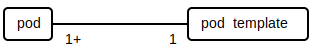
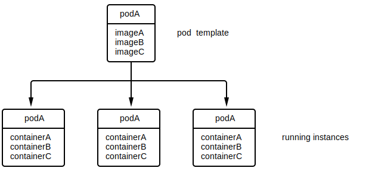

Kubernetes is a service orchestration framework that provides many of the plumbing pieces required for running services. These services include ...
Kubernetes is structured around containers.
In the context of containers, an ...
image is an application (or set of applications) packaged with all of its dependencies as an immutable and isolated filesystem. The filesystem typically contains all dependencies required for the application(s) run sealed at their correct version:
Images also typically include metadata describing its needs and operational standards. For example, the metadata may stipulate that the image ...
container is an instance of an image. A container creates an isolated copy of the image's filesystem, isolates the resources required for that image, and launches the entrypoint application for that image. That container can't see or access anything outside of the container unless explicitly allowed to by the user. For example, opening a port 8080 on a container won't open port 8080 on the host running it, but the user can explicitly ask that port 8080 in the container map to some port on the host.
As shown in the entity diagram above, each container is created from a single image, but that same image can be used for to create multiple containers. Another way to think about it is that an image is the blueprint of a factory and a container is the actual factory built from that blueprint. You can build multiple factories from the same blueprint.
Kubernetes requires two core components to run:
Different vendors provide different implementations of each. For example, certain vendors provide an OCI runtime that use virtualization technology for isolation instead of standard Linux isolation (e.g. cgroups).

OCIs and OCRs are also the basis for container engines, tools that are responsible for creating and running containers (similar in nature Kubernetes without the orchestration) as well as creating images and other high-level functionality such as local testing of containers. Docker Engine is an example of a container engine.

Kubernetes breaks down its orchestration as a set of objects. Each object is of a specific type (referred to as resource) and those objects coordinate and manage each other through linkages (described in Introduction/Labels). For example, a load balancer object is an instance of resource Service and each copy of a running application it pipes requests to is an instance of resource Pod, and the load balancer is decides which pod it to route to by searching for pod with a specific label.
This is in contrast to a hierarchal setup where objects have ownership or are inherited from others. There is no ownership or parent-child relationship here, only loosely coupled linkages.

Objects within Kubernetes may be assigned key-value pairs. Two types of key-value pair assignments exist:
In other words, labels are used to identity objects while annotations are not. For example if you have different classes of worker nodes in your cluster, it may be a good idea to label each node with its class. That way, if you wanted to deprecate a specific class, you'd be able to targe them as a group and shut them down.
Labels are targeted using a simple language called label selectors.
| Operator | Description |
|---|---|
key=value |
key is set to value |
key!=value |
key is not set to value |
key in (value1, value2, ...) |
key is either value1, value2, ... |
key notin (value1, value2, ...) |
key is neither value1, value2, ... |
key |
a value is set for key |
!key |
a value not set for key |
key1=value1,key2=value2 |
key1 is set to value1 and key2 is set to value2 |
Kubernetes uses labels for many of its internal services. For example, label selectors are used for deciding ...
If there are a large number of keys / annotations, either because the organization set them directly or because they're being set by external tools, the chance of a collision increases. To combat this, keys for labels and annotations can optionally include a prefix (separated by a slash) that maps to a DNS subdomain to help disambiguate it. For example, company.com/my_key rather than just having my_key.
⚠️NOTE️️️⚠️
The book states that key name itself can be at most 63 chars. If a prefix is included, it doesn't get included in that limit. A prefix can be up to 253 chars.
Objects can either be accessed and mutated through a standard command-line interface called kubectl or a REST web interface. Manipulations come in two forms:
imperative configuration - the mutations to perform on the object (via kubectl invocations).
kubectl run my_pod --image=gcr.io/my_company/my_pod:v1
kubectl set pods my_pod --requests='cpu=500m,memory=128Mi'
declarative configuration - the overall description of the object, called a manifest (as YAML or JSON via either kubectl or REST).
apiVersion: v1
kind: Pod
metadata:
name: my_pod
spec:
containers:
- image: gcr.io/my_company/my_pod:v1
name: my_pod
resources:
requests:
cpu: "500m"
memory: "128Mi"
kubectl apply -f obj.yaml
kubectl delete -f obj.yaml
Generally, declarative configurations are preferred over imperative configurations. When a declarative configuration is submitted, Kubernetes runs a reconciliation loop in the background to automatically mutate the state of the object to the one in the manifest. Contrast this to the imperative configuration method, where the mutations have to be manually submitted by the user one by one.
↩PREREQUISITES↩
The following sub-sections gives a overview of the main Kubernetes resources and example manifests. All manifests, regardless of the resource require the following fields...
apiVersion: v1
kind: Pod
metadata:
name: my-name
annotations:
author: "Jimbo D."
created_on: "Aug 20 2021"
labels:
app_server: jetty
... where version is the API version, kind is the resource (e.g. Pod), and metadata.name is the name of the object. In addition, the metadata section can contain labels and annotations to assign to the object via the metadata.labels and metadata.annotations manifest paths respectively.
Containers are deployed in Kubernetes via pod. A pod is is a set of containers grouped together, often containers that are so tightly coupled or are required to work in close proximity of each other (e.g. on the same host).

Many copies of a pod may be running on the cluster at the same time, often in an effort to distribute load and / or provide redundancy.


Containers within a pod are isolated in terms of their resource requirements (e.g. CPU, memory, and disk), but they share the same ...
Kubernetes orchestrates containers over a cluster of machines. The containers for a pod are guaranteed to all be running on the same machine. As such, pod are usually structured in a way that their containers are tightly coupled and scale together. For example, a pod with two containers, a WordPress server and its required MySQL database server, is a bad usage example because those two ...
Contrast that to an example of a pod with two containers, an application server and an associated log watcher. This is a good example because the two containers ...
Example manifest:
apiVersion: v1
kind: Pod
metadata:
name: my_pod
spec:
containers:
- image: gcr.io/my_company/my_pod:v1
name: my_pod
resources:
requests:
cpu: "500m"
memory: "128Mi"
limits:
cpu: "1000m"
memory: "256Mi"
volumeMounts:
- mountPath: "/data"
name: "kuard-data"
ports:
- containerPort: 8080
name: http
protocol: TCP
livenessProbe:
httpGet:
path: /healthy
port: 8080
initialDelaySeconds: 5
timeoutSeconds: 1
periodSeconds: 10
failureThreshold: 3
readinessProbe:
httpGet:
path: /ready
port: 8080
initialDelaySeconds: 5
timeoutSeconds: 1
periodSeconds: 10
failureThreshold: 3
volumes:
- name: "my_data"
hostPath:
path: "/var/lib/my_data" # literally mounts a path from the worker node? not persistant if node modes
- name: "my_data_nfs"
nfs:
server: nfs.server.location
path: "/path/on/nfs"
Pod resources are controlled via the spec.containers[].resources manifest path.
spec:
containers:
- ...
resources:
requests:
cpu: "500m"
memory: "128Mi"
limits:
cpu: "1000m"
memory: "256Mi"
...
requests are the minimum resources the pod needs to operate while limits are the maximum it can have. Some resources are dynamically adjustable while others require the pod to restart. For example, a pod ...
The example above lists out CPU and memory as viable resource types. The unit of measurement for ...
Pod port exposures are controlled via the spec.containers[].ports[] manifest path.
spec:
containers:
- ...
ports:
- containerPort: 8080
name: http
protocol: TCP
...
The example above exposes port 8080 to the rest of the cluster (not the outside world). Even with the port exposed, other entities on the cluster don't have a built-in way to discover the pod's IP / host or the fact that it has this specific port open. For that, services are required (see Resources/Services).
The container image's default entrypoint (process that gets started) can be updated via the spec.containers[].command[] manifest path. Likewise, the default command line arguments that hte container image starts with can be updated via spec.containers[].args[].
spec:
containers:
- image: gcr.io/my_company/my_pod:v1
command: [/opt/app/my-app]
args: [--no-logging, --dry-run]
⚠️NOTE️️️⚠️
The Dockerfile used to create the image had an ENTRYPOINT and a CMD. command essentially overrides the Dockerfile ENTRYPOINT and args overrides the Dockerfile's CMD.
↩PREREQUISITES↩
Environment variables can be hardcoded via the spec.containers[].env[] manifest path.
spec:
containers:
- image: gcr.io/my_company/my_pod:v1
env:
- name: LOG_LEVEL
value: "OFF"
- name: DRY_RUN
value: "true"
Once defined, an environment variables value can be used in other parts of the manifest using the syntax $(VAR_NAME). For example, an environment variable's value may be placed directly within an argument.
spec:
containers:
- image: gcr.io/my_company/my_pod:v1
env:
- name: LOG_LEVEL
value: "OFF"
args: [--logging_telemetry=$(LOG_LEVEL)]
Probes are a way for Kubernetes to check the state of a pod (e.g. alive, ready, started, etc..). The pod exposes some interfaces to determine state. Kubernetes periodically pings those interfaces to determine what actions to take (e.g. restarting a downed service.
Probes are controlled via the spec.containers[].livenessProbe and spec.containers[].readinessProbe manifest paths.
spec:
containers:
- ...
livenessProbe:
httpGet:
path: /healthy
port: 8080
initialDelaySeconds: 5
timeoutSeconds: 1
periodSeconds: 10
failureThreshold: 3
readinessProbe:
httpGet:
path: /ready
port: 8080
initialDelaySeconds: 5
timeoutSeconds: 1
periodSeconds: 10
failureThreshold: 3
...
Different types of probes exists. A ...
In the example above, each of the probes check a HTTP server within the pod at port 8080 but at different paths. The field ...
initialDelaySeconds is the number of seconds to wait before performing the first probe.timeoutSeconds is the number of seconds to wait before timing out.periodSeconds is the number of seconds to wait before performing a probe.failureThreshold is the maximum number of successive failure before Kubernetes considers the probe failed.successThreshold is the maximum number of successive successes before Kubernetes considers the probe passed.There are types of probes other than httpGet. A probe of type tcpSocket will simply test to see if a tcpSocket is empty and a probe of type exec will run a command on the container and fail if it gets a non-zero exit code.
spec:
containers:
- ...
readinessProbe:
exec:
command:
- cat
- /tmp/some_file_here
initialDelaySeconds: 5
timeoutSeconds: 1
periodSeconds: 10
failureThreshold: 3
↩PREREQUISITES↩
Volumes are controlled through spec.volumes[] and spec.containers[].volumneMounts ...
spec:
containers:
- ...
volumeMounts:
- mountPath: /data
name: my-data
...
volumes:
- name: my-data
hostPath:
path: "/var/lib/my_data"
spec.volumes[] defines a list of volumes, and those volumes can then go on to be mounted on the individual containers that make up the pod through spec.containers[].volumneMounts. Each entry in spec.volumes[] can either directly refer to a volume type and its parameters or it can refer to a persistent volume claim.
In the example above, a volume type is used directly within the pod (hostPath). This is discouraged because it binds the pod to a specific volume type and parameters, thereby making the volume and the pod tightly coupled. The better way to use volumes within the pod is to use persistent volumes and persistent volume claims. Assuming that you have a persistent volume claim already created, it can be referenced in spec.volumes[] by using the persistentVolumeClaim as the volume type.
spec:
volumes:
- name: my-data
persistentVolumeClaim:
claimName: my-data-pv-claim
Image pull policy is the policy Kubernetes uses for downloading a pod's images.
spec:
containers:
- ...
imagePullPolicy: IfNotPresent
...
A value of ...
IfNotPresent only downloads the image if its not already locally present.Always always downloads the image.Never never downloads the image (will fail if image does not exist locally).If unset, the pull policy differs based on the image tag. Not specifying a tag or specifying latest as the tag will always pull the image. Otherwise, the image will be pulled only if it isn't present.
↩PREREQUISITES↩
Image pull secret is the credentials Kubernetes uses for downloading a pod's images from a container registry. It requires that a secret object of type kubernetes.io/dockerconfigjson exist with those credentials in the same format as Docker's config.json file.
apiVersion: v1
kind: Secret
metadata:
name: my-docker-creds
type: kubernetes.io/dockerconfigjson
data:
.dockerconfigjson: |
"<base64 encoded ~/.docker/config.json file>"
⚠️NOTE️️️⚠️
If you don't want to supply the above manifest, you can also use kubectl to create a secret object with the appropriate credentials: kubectl create secret docker-registry secret-tiger-docker --docker-email=tiger@acme.example --docker-username=tiger --docker-password=pass1234 --docker-server=my-registry.example:5000.
This secret should be referenced at the top-level of your pod's specification.
spec:
imagePullSecrets:
- name: my-docker-creds # Place secret here. This is a list, so you can have many docker
- ... # credential secrets here.
containers:
- name: my-container
image: my-registry.example/tiger/my-container:1.0.1
Restart policy is the policy Kubernetes uses for determining when a pod should be restarted. Its controlled via the spec.containers[].restartPolicy manifest paths ...
spec:
containers:
- ...
restartPolicy: Always
...
A value of ...
Always always restarts the pod regardless of how it exists (default).OnFailure only restarts the pod only if it failed execution.Never never restarts the pod.The top one is typically used when running servers that should always be up (e.g. http server) while the latter two are typically used for one-off jobs.
↩PREREQUISITES↩
Configuration can come from both config maps and secrets. A config map's key-value pairs can be accessed by a container via environment variables, command-line arguments, or volume mounts. To set a ...
environment variable:
spec:
containers:
- ...
# Under each "env" entry to come from a config map, add a "valueFrom" that contains
# the config map to pull an entry from and the key for the config map entry to pull.
env:
- name: ENV_VAR_NAME1 # Env var to assign value to.
valueFrom:
configMapKeyRef:
name: my-config # Config map to pull from
key: CONFIG_MAP_KEY1 # Config map entry to get value from
- name: ENV_VAR_NAME2
valueFrom:
configMapKeyRef:
name: my-config
key: CONFIG_MAP_KEY2
In certain cases, you may want to map all entries within a config map directly as a set of environment variables. This is useful when many entries of a config map are required for configuration, so many that becomes tedious and error-prone to map them all to environment variables by hand.
spec:
containers:
- ...
# "envFrom" maps all entries of a config map as env vars.
envFrom:
- prefix: CONFIG_ # Prefix to tack on to each config map entry (optional).
configMapRef:
name: my-config
⚠️NOTE️️️⚠️
If a config map name can't map to an environment variable, it's silently omitted. For example, env names can't contain dashes.
command-line argument:
spec:
containers:
- ...
# You can't pass in config map entries directly as command-line arguments, but what
# you can do is load them up first as environment variables and then reference the
# environment variables in the "command" (or "args") field.
env:
- name: ENV_VAR_NAME1
valueFrom:
configMapKeyRef:
name: my-config
key: CONFIG_MAP_KEY1
- name: ENV_VAR_NAME2
valueFrom:
configMapKeyRef:
name: my-config
key: CONFIG_MAP_KEY2
command:
- "/my-app.sh"
- "$(ENV_VAR_NAME1)"
- "$(ENV_VAR_NAME2)"
volume mount:
spec:
# Place a "configMap" type volume into the pod.
volumes:
- name: config-volume
configMap:
name: my-config
# "items" lists out specific config map entries to include and mounts each as
# a specific filename. If you don't include this, all config map entries will
# be included (filenames will map to config map entry names).
items:
- key: CONFIG_MAP_KEY1
path: file1.cfg
- key: CONFIG_MAP_KEY2
path: file2.cfg
# In the container, mount that volume to whichever containers you want.
containers:
- ...
volumeMounts:
- name: config-volume
mountPath: /config
readOnly: true # Make the mount read-only (optional).
defaultMode: "6600" # File access permissions of mounted files (optional).
If the directory you're mounting to already exists on the container, that existing directory is entirely replaced. In the example above, if the container already has a "/config" directory, it'll get replaced entirely with the config map mount (this is bad because the container's "/config" might have other necessary files required for the container to work). A workaround to this is to use the volume mount's "subPath" property, which allows you to mount a single file / directory from a volume.
spec:
volumes:
- name: config-volume
configMap:
name: my-config
containers:
- ...
# The use of "subPath" here ensures that that original "/config" directory on the
# container doesn't go away. It remains in place, and files / directories are just
# added to it.
volumeMounts:
- name: config-volume
mountPath: /config/file1.cfg # Destination file to mount to.
subPath: CONFIG_MAP_KEY1 # Source config map entry name.
- name: config-volume
mountPath: /config/file2.cfg # Destination file to mount to.
subPath: CONFIG_MAP_KEY2 # Source config map entry name.
A secret object's key-value pairs can be accessed in almost exactly the same way with almost exactly the same set of options and restrictions. To set a ...
environment variable:
spec:
containers:
- ...
env:
- name: ENV_VAR_NAME1
valueFrom:
secretKeyRef: # This has been changed from "configMapKeyRef" to "secretKeyRef".
name: my-secret
key: SECRET_KEY1
- name: ENV_VAR_NAME2
valueFrom:
secretKeyRef: # This has been changed from "configMapKeyRef" to "secretKeyRef".
name: my-secret
key: SECRET_KEY2
command-line argument:
spec:
containers:
- ...
env:
- name: ENV_VAR_NAME1
valueFrom:
secretKeyRef: # This has been changed from "configMapKeyRef" to "secretKeyRef".
name: my-secret
key: SECRET_KEY1
- name: ENV_VAR_NAME2
valueFrom:
secretKeyRef: # This has been changed from "configMapKeyRef" to "secretKeyRef".
name: my-secret
key: SECRET_KEY2
command:
- "/my-app.sh"
- "$(ENV_VAR_NAME1)"
- "$(ENV_VAR_NAME2)"
volume mount:
spec:
volumes:
- name: secret-volume
secret: # This has been changed from "configMap" to "secret"
name: my-secret
containers:
- ...
volumeMounts:
- name: secret-volume
mountPath: /secrets
readOnly: true
Both config maps and secret objects can be dynamically updated. If a running pod is running when an update gets issued, it may or may not receive those updates depending on the configuration usage method:
Command-line arguments and environment variables don't update because an application's command-line arguments and environment variables can't be changed from the outside once a process launches. Individual files/directories mounted from a volume don't update because of technical limitations related to how Linux filesystems work (see https://github.com/kubernetes/kubernetes/issues/50345#issuecomment-656947594). Whole volume mounts do update files under the mount, but it's up to the application to detect and reload those changed files.
⚠️NOTE️️️⚠️
All files in a volume mount get updated at once. This is possible because of symlinks. New directory get loaded in and the symlink is updated to use that new directory.
⚠️NOTE️️️⚠️
For individual files/directories mounted from a volume, one workaround to receiving updates is to use symlinks. Essentially, mount the whole volume to path that doesn't conflict with an existing path in the container. Then, as a part of the container's start-up process, add symlinks to the whole volume mount wherever needed.
For example, if the application requires a configuration file at /etc/my_config.conf, you can mount all configurations to /config and then symlink /etc/my_config.conf to /config/my_config.conf. That way, you can still receive updates.
The typical workaround to config map dynamic updates is to use deployments. In deployments, secret objects / config maps and pod are bound together as a single unit, meaning that all pod restart automatically on any change.
🔍SEE ALSO🔍
↩PREREQUISITES↩
To use secrets in a pod, a specialized secret volume type must be used and mounted. For example, the following volume mounts the secrets created in the example command above ..
spec:
containers:
- ...
volumeMounts:
- name: my-secrets
mountPath: "/tls"
readOnly: true
volumes:
- name: my-secrets
secret:
secretName: my-tls-cert
↩PREREQUISITES↩
For a pod to be able to communicate with other pod in the cluster, it needs to be able to discover the IPs of those other pod / services first. The mechanism for this is services, and there's two ways in which a pod can discover services in the cluster: environment variables and DNS.
These service discovery mechanisms are details in the subsections below.
↩PREREQUISITES↩
When a pod launches, all IP and port combinations for services within the same namespace are stored as environment variables which the container(s) within the pod can query. A service's The environment variable names are in the format {SVCNAME}_SERVICE_HOST / {SVCNAME}_SERVICE_PORT, where {SVCNAME} is the service converted to uppercase and dashes swapped with underscores. For example, two services service-a and service-b as environment variables:
SERVICE_A_SERVICE_HOST=10.111.240.1
SERVICE_A_SERVICE_PORT=443
SERVICE_B_SERVICE_HOST=10.111.249.153
SERVICE_B_SERVICE_PORT=80
If a service exposes multiple ports, only the first port goes in {SVCNAME}_SERVICE_PORT. When multiple ports are present, additional environment variables get created in the format {SVCNAME}_SERVICE_PORT_{PORTNAME}, where {PORTNAME} is the name of service's port modified the same way that {SVCNAME} is. For example, the service service-c exposes two ports named web-1 and metrics-1:
SERVICE_A_SERVICE_HOST=10.111.240.1
SERVICE_A_SERVICE_PORT=443
SERVICE_A_SERVICE_PORT_WEB_1=443
SERVICE_A_SERVICE_PORT_METRICS_1=8080
⚠️NOTE️️️⚠️
Looking at the k8s code, it looks like for a service port needs to be named for it as an environment variable. Service ports that don't have a name won't show up as environment variables. See here.
Aside from the only listing services within the same namespace and potential naming conflicts that happen during name normalization (uppercase-ing and dash to underscore -- e.g. My-name and my_namE both end up as MY_NAME), another problem with using environment variables for service discovery is that the services required by a pod need to be active before the pod starts. The reason for this is that environment variables can only be set prior to the launch of a container process. If a process launches and a service comes up afterwards, that process's environment variables won't include that service's host and port.
↩PREREQUISITES↩
Kubernetes provides a DNS server which is used for service discovery. Each pod in the cluster is automatically configured to use this DNS server and simply has to query it for a service's name. If the queried service is present in the cluster, the DNS server will return the stable IP for the service.
⚠️NOTE️️️⚠️
The DNS server runs as an internal Kubernetes application called 'corednsorkube-dns. This is usually in the kube-system` namespace. Recall that the IP of a service is stable for the entire lifetime of the service, meaning that service restarts and DNS caching by the application and / or OS isn't an issue here.
The general domain query format is {SVCNAME}.{NAMESPACE}.svc.{CLUSTERDOMAIN}, where ...
{SVCNAME} is the name of the service.{NAMESPACE} is the name of the namespace that {SVCNAME} is in.{CLUSTERDOMAIN} is the cluster domain suffix of the cluster that {SVCNAME} and {NAMESPACE} are in.For example, to query for the IP of service serviceA in namespace ns1 within a cluster with the domain name suffix cluster.local, the domain name to query is serviceA.ns1.svc.cluster.local. Alternatively, if the pod doing the querying is ...
serviceA.ns1.serviceA.Compared to environment variable service discovery, using DNS to discover services won't include information about ports.
Metadata such as a pod's name, IP address, which node it's running on node, what namespace it's under, etc.. can be accessed within a container.
TODO: START FROM CH8
TODO: START FROM CH8
TODO: START FROM CH8
TODO: START FROM CH8
TODO: START FROM CH8
TODO: START FROM CH8
TODO: START FROM CH8
TODO: START FROM CH8
TODO: START FROM CH8
TODO: START FROM CH8
TODO: START FROM CH8
TODO: START FROM CH8
TODO: START FROM CH8
TODO: START FROM CH8
TODO: START FROM CH8
TODO: START FROM CH8
TODO: START FROM CH8
TODO: START FROM CH8
A configuration map is a type of resource comprised of key-value pairs intended to configure the main application of a container (or many containers). By decoupling configurations from the containers themselves, the same configuration map (or parts of it) could be used to configure multiple containers within Kubernetes.
⚠️NOTE️️️⚠️
Do NOT use this for storing secrets such as tokens, certificates, or passwords. See Resources/Secrets instead.
apiVersion: v1
kind: ConfigMap
metadata:
name: my-config
data:
param1: another-value
param2: extra-value
my-config.ini: |
# This is a sample config file that I might use to configure an application
key1 = value1
ket1 = value2
The key-value pairs of a configuration map resource typically get exposed to a container either as environment variables, files, or command-line arguments. Keys are limited to certain characters: alphabet, numbers, dashes, underscores, and dots.
↩PREREQUISITES↩
A secret object is a type of resource comprised of key-value pairs, similar to a config map, but oriented towards security rather than just configuration (e.g. for storing things like access tokens, passwords, certificates). As opposed to a config map, Kubernetes takes extra precautions to ensure that a secret object is stored and used in a secure manner.
apiVersion: v1
kind: Secret
metadata:
name: mysecret
type: Opaque # "Opaque" is the default type (can be omitted)
# Both text and binary data are supported. To insert a text entry, place it under
# "stringData". To insert a binary entry, base64 the value and place it under "data".
stringData:
username: admin
password: pepsi_one
data:
key_file: eWFiYmFkYWJiYWRvbw==
Many types of secrets exist. Each type either does some level of verification on the entries and / or acts as a tag to convey what data is contained within (e.g. SSH data, TLS data, etc..). In general Opaque is the secret type used by most applications.
⚠️NOTE️️️⚠️
Certain sources are claiming that a secret object can be 1 megabyte at most.
↩PREREQUISITES↩
Nodes are the machines that pod run on. A Kubernetes cluster often contains multiple nodes, each with a certain amount of resources. Pod get assigned to nodes based on their resource requirements. For example, if a pod A requires 2gb of memory and node C has 24 gigs available, that node may get assigned to run that pod.

Kubernetes typically attempts to schedule multiple instances of the same pod on different nodes, such that a downed node won't take out all instances of the service that pod runs. In the example above, pod instances of the same type are spread out across the 3 nodes.
Kubernetes has a leader-follower architecture, meaning that of the nodes a small subset is chosen to lead / manage the others. The leaders are referred to as master nodes while the followers are referred to as worker nodes.

A master node can still run pod just like the worker nodes, but some of its resources will be tied up for the purpose of managing worker nodes.
Volumes are disks where data can be persisted across container restarts. Normally, Kubernetes resets a container's filesystem each time that container restarts (e.g. after a crash or a pod getting moved to a different node). While that works for some types of applications, other application types such as database servers need to retain state across restarts.
Volumes in Kubernetes are broken down into "persistent volumes" and "persistent volume claims". A ...
The idea is that a persistent volume itself is just a floating block of disk space. Only when its claimed does it have an assignment. Pod can then latch on to those assignments.

In the example above, there are 4 volumes in total but only 3 of those volumes are claimed. podA latches on to claim1 and claim2 while podB latches on to claim3 and claim2 (both pod can access the volume claimed in claim2).
⚠️NOTE️️️⚠️
Persistent volumes themselves are cluster-level resources while persistent volume claims are namespace-level resources. All volumes are available for claims regardless of the namespace that claim is in. Maybe you can limit which volumes can be claimed by using labels / label selectors?
⚠️NOTE️️️⚠️
Part of the reasoning for doing it like this is decoupling: volumes are independent from pod and a volume can be have shared access across pod.
Another reasons is that a developer should only be responsible for claiming a volume while the cluster administrator should be responsible for setting up those volumes and dealing with backend details like the specifics of the volume type and how large each volume is. As a developer, you only have to make a "claim" while the administrator is responsible for ensuring those resources exist.
Example persistent volume manifest:
apiVersion: v1
kind: PersistentVolume
metadata:
name: test-vol
spec:
capacity:
storage: 10Gi
accessModes:
- ReadWriteOnce
- ReadOnlyMany
persistentVolumeReclaimPolicy: Recycle # once a claim on this volume is given up, delete the files on disk
awsElasticBlockStore:
volumeID: volume-id
fsType: ext4
Example persistent volume claim manifest:
apiVersion: v1
kind: PersistentVolumeClaim
metadata:
name: test-vol-claim
spec:
resources:
requests:
storage: 1Gi # volume must have at least this much space
accessModes:
- ReadWriteOnce # volume must have this access mode
storageClassName: "" # MUST BE EMPTY STRING to claim test-vol described above (if set, uses dynamic provisioning)
⚠️NOTE️️️⚠️
Why must spec.storageClassName be an empty string instead of being removed entirely? Being removed entirely would cause Kubernetes to use a default storage class name (if one exists), which is not what you want. Storage classes are described in the next few paragraphs below.
There are two types of volume provisioning available:
Dynamic provisioning only requires that you make a persistent volume claim with a specific spec.storageClassName. The administrator is responsible for ensuring a provisioner exists for that storage class and it automatically creates a volume of that type when a claim comes in. Each storage class can have different characteristics such as volume type (e.g. HDD vs SSD), volume read/write speeds, backup policies, etc.
apiVersion: storage.k8s.io/v1
kind: StorageClass
metadata:
name: standard
provisioner: kubernetes.io/aws-ebs
parameters:
type: gp2
The capacity of a persistent volume is set through spec.capacity.storage.
spec:
capacity:
storage: 10Gi
A persistent volume claim can then be set to require a specific amount of capacity via spec.resources.request.storage. Specifically, requests defines the minimum required capacity and limits defines the maximum required capacity.
spec:
resources:
requests:
storage: 1Gi # volume must have at least this much space
limits:
storage: 5Gi # volume can't have more than this much space
A persistent volume can support multiple access modes:
ReadWriteOnce - volume is mountable by a single node in read-write mode.ReadWriteOncePod - volume is mountable by a single pod in read-write mode.ReadWriteMany - volume is mountable by many nodes in read-write mode.ReadOnlyMany - volume is mountable by many nodes in read-only mode.The available access modes of a persistent volume is set through spec.accessModes.
spec:
accessModes:
- ReadWriteOnce
- ReadOnlyMany
A persistent volume claim can then be set to target on or more access modes.
spec:
accessModes:
- ReadWriteOnce # volume must have this access mode
⚠️NOTE️️️⚠️
A claim takes a list of access modes, so is it that a claim needs to get a volume with all access modes present or just one of the access modes present?
⚠️NOTE️️️⚠️
Not all persistent volume types support all access modes. Types are discussed further below.
A persistent volume claim, once released, may or may not make the persistent volume claimable again depending on what spec.persistentVolumeReclaimPolicy was set to.
spec:
persistentVolumeReclaimPolicy: Recycle
The options available are ...
Retain - keep all existing data on the persistent volume and prevent a new persistent volume claim from claiming it again.Recycle - delete all existing data on the persistent volume and allow a new persistent volume claim to claim it again.Delete - delete the persistent volume object itself.If the data on disk is critical to operations, the option to choose will likely be Retain.
⚠️NOTE️️️⚠️
For retain specifically, once the existing persistent volume claim is released, the persistent volume itself goes into "Released" status. If it were available reclamation, it would go into "Available" status. The book mentions that there is no way to "recycle" a persistent volume that's in "Released" status without destroying and recreating it.
According to the k8s docs, this is the way it is so that users have a chance to manually pull out data considered precious before it gets destroyed.
⚠️NOTE️️️⚠️
Not all persistent volume types support all reclaim policies. Types are discussed further below.
A persistent volume needs to come from somewhere, either via a cloud provider or using some internally networked (or even local) disks. There are many volume types: AWS elastic block storage, Azure file, Azure Disk, GCE persistent disk, etc.. Each type has its own set of restrictions such as what access modes it supports or the types of nodes it can be mounted.
The configuration for each type is unique and goes directly under spec. The following are sample configurations for popular types...
⚠️NOTE️️️⚠️
The documentation says that a lot of these types are deprecated and being moved over to something called CSI (container storage interface), so these examples may need to be updated in the future
# Amazon Elastic Block Storage
spec:
awsElasticBlockStore:
volumeID: volume-id # a volume with this ID must already exist in AWS
fsType: ext4
# Google Compute Engine Persistent Disk
spec:
gcePersistentDisk:
pdName: test-vol # a disk with this name must already exist in GCE
fsType: ext4
# Azure Disk
spec:
azureDisk:
# a volume with this name and URI must already exist in Azure
diskName: test.vhd
diskURI: https://someaccount.blob.microsoft.net/vhds/test.vhd
# Host path
# -- this is a path on the node that the pod gets scheduled on, useful
# for debugging purposes.
spec:
hostPath:
path: /data
↩PREREQUISITES↩
Defining a storage class allows for dynamic provisioning of persistent volumes per persistent volume claim.
apiVersion: storage.k8s.io/v1
kind: StorageClass
metadata:
name: standard
provisioner: kubernetes.io/aws-ebs
parameters:
type: gp2
reclaimPolicy: Retain
allowVolumeExpansion: true
provisioner and parameters define how persistent volumes are to be created and are unique to each volume type. In the example above, the storage class is named standard and it provisions new persistent volumes on AWS. Any persistent volume claim with spec.storageClassName set to standard will call out to this AWS elastic store provisioner to create a persistent volume of type awsElasticBlockStore which gets assigned to it.
apiVersion: v1
kind: PersistentVolumeClaim
metadata:
name: test-vol-claim
spec:
resources:
requests:
storage: 1Gi
accessModes:
- ReadWriteOnce
storageClassName: standard # use the storage class described above for this claim
If allowVolumeExpansion is set to true, the persistent volume can be resized by editing the persistent volume claim object. Only some volume types support volume expansion. The example above will work because AWS elastic block store volume types do support volume expansion.
reclaimPolicy maps to a persistent volume's spec.persistentVolumeReclaimPolicy, except that Recycle isn't one of the allowed options: only Delete and Retain are allowed.If unset, the reclaim policy of a dynamically provisioned persistent volume is Delete. The example above overrides the reclaim policy to Retain.
⚠️NOTE️️️⚠️
Since these persistent volumes are being dynamically provisioned, it doesn't make sense to have Recycle. You can just Delete and if a new claim comes in it'll automatically provision a new volume. It's essentially the same thing as Recycle.
If a persistent volume claim leaves spec.storageClassName unset, the persistent volume claim will use whatever storage class Kubernetes has set as its default. Recall that leaving spec.storageClassName unset is not the same as leaving it as an empty string. To leave unset means to keep it out of the declaration entirely. If spec.storageClassName is ...
Most Kubernetes installations have a default storage class available, identified by the storage class having the annotation storageclass.kubernetes.io/is-default-class=true.
# kubectl get sc
# Note how the name identifies it as the default.
NAME PROVISIONER RECLAIMPOLICY VOLUMEBINDINGMODE ALLOWVOLUMEEXPANSION AGE
microk8s-hostpath (default) microk8s.io/hostpath Delete WaitForFirstConsumer false 6s
# kubectl get sc microk8s-hostpath -o yaml
apiVersion: storage.k8s.io/v1
kind: StorageClass
metadata:
annotations:
kubectl.kubernetes.io/last-applied-configuration: |
{"apiVersion":"storage.k8s.io/v1","kind":"StorageClass","metadata":{"annotations":{"storageclass.kubernetes.io/is-default-class":"true"},"name":"microk8s-hostpath"},"provisioner":"microk8s.io/hostpath","volumeBindingMode":"WaitForFirstConsumer"}
storageclass.kubernetes.io/is-default-class: "true"
creationTimestamp: "2022-07-22T19:41:28Z"
name: microk8s-hostpath
resourceVersion: "2775"
uid: 1df92cbc-6e2f-4726-a487-a81b1fcd8d2b
provisioner: microk8s.io/hostpath
reclaimPolicy: Delete
volumeBindingMode: WaitForFirstConsumer
Endpoints (plural) is a Kubernetes resource that simply holds a list of IP addresses and ports. It's used by higher-level Kubernetes resources to simplify routing. For example, an endpoints resource may direct to all the nodes that make up a sharded database server.
Example manifest:
apiVersion: v1
kind: Endpoints
metadata:
name: database
subsets:
- addresses:
- ip: 10.10.1.1
- ip: 10.10.1.2
- ip: 10.10.1.3
ports:
- port: 5432
protocol: TCP # TCP or UDP, default: TCP
name: pg
- addresses:
- ip: 10.13.4.101
- ip: 10.13.4.102
- ip: 10.13.4.103
ports:
- port: 12345
protocol: TCP # TCP or UDP, default: TCP
name: pg2
The endpoints in the example YAML above points to [10.10.1.1:5432, 10.10.1.2:5432, 10.10.1.3:5432, 10.13.4.101:12345, 10.13.4.102:12345, 10.13.4.103:12345].
Services are a discovery and load balancing mechanism. A service exposes a set of pod under a single fixed unified hostname and IP, routing traffic to that set by load balancing incoming requests across the set. Any external application would need to use a service's hostname because the IP / host of the single pod instances aren't fixed, exposed, or known. That is, pod are transient and aren't guaranteed to always reside on the same node. As they shutdown, come up, restart, move between nodes, etc.., there's no implicit mechanism that requestors can use to route their requests accordingly.
A service fixes this my internally tracking such changes and providing a single unified point of access.

⚠️NOTE️️️⚠️
The book mentions why DNS can't be used directly. For example, having a basic DNS service which returns a list of all up-and-running pod IPs won't work because ...
The service fixes this because it acts as a load balancing proxy and its IP / host never changes (DNS caching won't break anything).
Example manifest:
apiVersion: v1
kind: Service
metadata:
name: my-service
spec:
selector:
app: MyApp
ports:
- name: webapp-port
protocol: TCP
port: 80
targetPort: 9376
⚠️NOTE️️️⚠️
Internally, an EndPoints object is used to track pod. When you create a service, Kubernetes automatically creates an accompanying EndPoints object that the service makes use of.
↩PREREQUISITES↩
A service determines which pod it should route traffic to via the spec.selector manifest path. This manifest path contains key-value mappings, where these key-value mappings are labels that a pod needs before being considered for this service's traffic ...
spec:
selector:
key1: value1
key2: value2
key3: value3
Internally, the service creates and manages an endpoints object containing the IP and port for each pod captured by the selector. If no selectors are present, the service expects an endpoints object with the same name to exist, where that endpoints object contains the list of IP and port pairs that the service should route to.
apiVersion: v1
kind: Endpoints
metadata:
name: database # must be same name as the service
subsets:
- addresses:
- ip: 10.10.1.1
- ip: 10.10.1.2
- ip: 10.10.1.3
ports:
- port: 5432
If no selectors are present but spec.type is set to ExternalName, the service will route to the host specified in spec.externalName. This is useful for situations where you want to hide the destination, such as an external API that you also want to mock for development / testing.
spec:
type: ExternalName
externalName: api.externalcompany.com
ports:
- name: api-port
protocol: TCP
port: 8080
targetPort: 5000
⚠️NOTE️️️⚠️
If not set, spec.type defaults to ClusterIP. That's the type used when selectors are used to create an endpoints / a custom endpoints is used.
↩PREREQUISITES↩
A service can listen on multiple ports, controlled via the spec.ports manifest path.
spec:
ports:
- name: webapp-port
protocol: TCP
port: 80
targetPort: 9376
- name: api-port
protocol: TCP
port: 8080
targetPort: 1111
...
name is a friendly name to identify the port (optional)protocol is either TCP or UDP (defaults to TCP).port is the port that the service listens on.targetPort is the port that requests are forwarded to on the pod (defaults to value set for port).⚠️NOTE️️️⚠️
Not having a name makes it more difficult for pod to discover a service. Discussed further in the service discovery section.
The example above forwards requests on two ports. Requests on port ...
Ports may also reference the names of ports in a pod manifest. For example, imagine the pod manifest for a pod assigned to a service provides names for its ports.
apiVersion: v1
kind: Pod
metadata:
name: my_pod
spec:
containers:
- ...
ports:
- containerPort: 8080
name: my-http-port
protocol: TCP
...
In the service for that targets this pod manifest, you can use my_http_port as a targetPort.
apiVersion: v1
kind: Service
metadata:
name: my-service
spec:
selector:
app: MyApp
ports:
- name: webapp-port
protocol: TCP
port: 80
targetPort: my-http-port
⚠️NOTE️️️⚠️
Does this work for manual endpoints as well? When a selector isn't used with a service, it looks for an endpoints object of the same name as the service to figure out where the service should route to. That endpoints object can have names associated with its ports as well.
⚠️NOTE️️️⚠️
A service decides which pod it routes to based key-value pairs in on spec.selector. What happens if the key-value pairs identify a set of pod instances where some of those instances don't have a port named my-http-port. For example, a service may be forwarding to two applications rather than a single application which just could be sharing the same set of key-value labels (pod instances are heterogenous).
Maybe this isn't possible with Kubernetes?
↩PREREQUISITES↩
The service periodically probes the status of each pod to determine if it can handle requests or not. Two types of probes are performed:
These probes are defined directly in the pod manifest.

⚠️NOTE️️️⚠️
Recall that, when a service has selectors assigned, Kubernetes internally maintains an EndPoints object that contains the addresses of ready and healthy pod. The addresses in this endpoints object is what the service routes to.
↩PREREQUISITES↩
A service that's headless is one which there is no load balancer forwarding requests to pod / endpoints. Instead, the domain for the service will resolve a list of ready IPs for the pod (or endpoints) that the service is for.
To create a headless service, set spec.clusterIP manifest path to None.
spec:
clusterIP: None
Generally, headless services shouldn't be used because DNS queries are typically cached by the operating system. If the IPs that a service forwards to change, apps that have recently queried the service's DNS will continue to use the old (cached) set of IPs until the operating system purges its DNS cache.
How a service decides to forward incoming requests to the pod instances assigned to it is controlled via spec.sessionAffinity manifest path. Assigning a value of ...
None forwards each request to a randomly selected pod instance (default behaviour).ClientIP forwards each request originating from the same IP to the same pod instance.When using ClientIP, you may also provide a maximum session "sticky time" via the manifest path spec.sessionAffinityConfig.clientIP.timeoutSeconds. By default, this value is set to 108300 (around 3 hours).
spec:
sessionAffinity: ClientIP
sessionAffinityConfig:
clientIP:
timeoutSeconds: 10000
⚠️NOTE️️️⚠️
When using ClientIP? What happens when the service runs out memory to track client IPs? LRU algorithm to decide which to keep / discard?
⚠️NOTE️️️⚠️
The book mentions that because services work on the TCP/UDP level and not at HTTP/HTTPS level, forwarding requests by tracking session cookies isn't a thing.
The service type defines where and how a service gets exposed, controlled via the spec.type manifest path. For example, a service may only be accessible within the cluster, to specific parts of the cluster, to an external network, or to the public Internet.
If not specified, the spec.type of a resource is ClusterIP, meaning that it's exposed only locally within the cluster.
↩PREREQUISITES↩
Services of type ClusterIP / ExternalName are only accessible from within the cluster. The hostname of such services are broken down as follows: NAME.NAMESPACE.svc.CLUSTER
default).cluster.local.).Depending on what level you're working in, a hostname may be shortened. For example, if the requestor and the service are within ...
The IP for a ClusterIP / ExternalName service is stable as well, just like the hostname.
⚠️NOTE️️️⚠️
Internally, a ClusterIP service uses kube-proxy to route requests to relevant pod (EndPoints).
spec:
type: ClusterIP
Services of type NodePort are accessible from outside the cluster. Every worker node opens a port (either user-defined or assigned by the system) that routes requests to the service. Since nodes are transient, there is no single point of access to the service.
When NodePort is used as the type, the manifest path spec.ports[].nodePort defines the port on the worker node to open.
spec:
type: NodePort
ports:
- protocol: TCP
port: 80
targetPort: 9376
nodePort: 8080
...
Services of type LoadBalancer are accessible from outside the cluster. When the LoadBalancer type is used, the cloud provider running the cluster assigns their version of a load balancer to route external HTTP requests to the Kubernetes Ingress component. Ingress then determines what service that request should be routed to based on details within the HTTP parameters (e.g. Host).
There is no built-in Kubernetes implementation of Ingress. Kubernetes provides the interface but someone must provide the implementation, called an Ingress controller, for the functionality to be there. The reason for this is that load balancers come in multiple forms: software load balancers, cloud provider load balancers, and hardware load balancers. When used directly, each has a unique way it needs to be configured, but the Ingress implementation abstracts that out.
spec:
type: LoadBalancer
ports:
- protocol: TCP
port: 80
targetPort: 9376
nodePort: 8080
...
Once provisioned, the object will have the manifest path status.loadBalancer.ingress.ip[] added to it, which states the IP of the load balancer forwarding requests to this service.
spec:
type: LoadBalancer
ports:
- protocol: TCP
port: 80
targetPort: 9376
nodePort: 8080
...
status:
loadBalancer:
ingress:
ip: 192.0.5.6
⚠️NOTE️️️⚠️
You can also use kubectl to get a list of services and it'll also list out the public IP.
⚠️NOTE️️️⚠️
The book says that a load balancer type is a special case of node port type.
↩PREREQUISITES↩
Similar to a service of type LoadBalancer, An Ingress object is a load balancer with a publicly exposed IP. However, rather than load balancing at the TCP/UDP level, an Ingress object acts as a load balancing HTTP proxy server. An HTTP request coming into an Ingress object gets routed to one of many existing services based on host and path HTTP headers. This is useful because the cluster can expose several services under a single public IP address.

apiVersion: networking.k8s.io/v1
kind: Ingress
metadata:
name: my-ingress
spec:
rules:
- host: stats.myhost.com
http:
paths:
- path: /graphana
pathType: Prefix
backend:
service:
name: graphana-service
port:
number: 80
- host: api.myhost.com
http:
paths:
- path: /v2
pathType: Prefix
backend:
service:
name: api-service-v2
port:
number: 80
- path: /v1
pathType: Prefix
backend:
service:
name: api-service-v1
port:
number: 80
- path: /
pathType: Prefix
backend:
service:
name: api-service-v2
port:
number: 80
⚠️NOTE️️️⚠️
According to the book, most if not all implementations of Ingress simply query the service for its endpoints and directly load balance across them vs forwarding the request through that service. Note that the port in the example above is still the port that the service is listening on, not the port of the pod is listening on.
The host in each rule can be either an exact host or it could contain wildcards (e.g. *.api.myhost.com). Each name in the host (split by dot) intended for a wildcard should explicitly have an asterisk in its place. The portion the asterisk is in must exist and it only covers that name. For example, the rule below will match ONE.api.myhost.com, but not TWO.THREE.api.myhost.com or api.myhost.com.
spec:
rules:
- host: "*.api.myhost.com"
- path: /v2
pathType: Prefix
backend:
service:
name: api-service-v2
port:
number: 80
Each rule entry should have a path type associated with it. It can be set to any of the following values:
Exact - Matches the URL path exactly (case sensitive).Prefix - Matches the URL path prefix (case sensitive).ImplementationSpecific - Based on the class of the Ingress resource.spec:
rules:
- host: api.myhost.com
http:
paths:
- path: /my/prefix/path
pathType: Prefix
backend:
service:
name: api-service-v2
port:
number: 80
The most common path type is Prefix. A type of Prefix splits the path using / and matches the rule if the incoming request's path starts with the same path elements as the rule's path. Trailing slashes are ignored (e.g. /p1/p2/p3/ and /p1/p2/p3 are equivalent).
⚠️NOTE️️️⚠️
What about ImplementationSpecific? There are different types of Ingress controllers, each of which has its own configuration options. An Ingress class is something you can put into your Ingress resource that contains "configuration including the name of the controller that should implement the class." It seems like an advanced topic and I don't know enough to write about it. Probably not something you have to pat attention to if you're doing basic cloud stuff.
↩PREREQUISITES↩
Assuming you have a TLS certificate and key files for the host configured on the Ingress resource, you can add those into Kubernetes as a secret and configure the Ingress resource to make use of it.
# openssl genrsa -out tls.key 2048
# openssl req -new -x509 -key tls.key -out tls.cert -days 360 -subj /CN=api.myhost.com
# kubectl create secret tls my-api-tls --cert=tls.crt --key=tls.key
apiVersion: v1
kind: Secret
metadata:
name: my-api-tls
type: kubernetes.io/tls
data:
tls.crt: base64 encoded cert
tls.key: base64 encoded key
For each certificate secret intended to be used by the Ingress resource, there should be an array entry under the spec.tls[] manifest path. The certificate secret name must be placed under secretName and the domain(s) supported by that certificate must be listed under hosts. Hosts must match hosts explicitly listed un the Ingress resource's rules.
spec:
tls:
- hosts:
- api.myhost.com
secretName: my-api-tls
- hosts:
- stats.myhost.com
secretName: my-stats-tls
Once an encrypted request comes in to the Ingress controller, it's decrypted. That decrypted request then gets forwarded to the service it was intended for.
⚠️NOTE️️️⚠️
From the k8s website:
You need to make sure the TLS secret you created came from a certificate that contains a Common Name (CN), also known as a Fully Qualified Domain Name (FQDN) for https-example.foo.com.
Keep in mind that TLS will not work on the default rule because the certificates would have to be issued for all the possible sub-domains. Therefore, hosts in the tls section need to explicitly match the host in the rules section.
⚠️NOTE️️️⚠️
The book mentions that CertificateSigningRequest is a special type of Kubernetes resource that will sign certificates for you, if it was set up. You can issue requests via kubectl certificate approve csr_name and it'll either automate it somehow or a human will process it? Not sure exactly what's going on here.
A namespace is a Kubernetes resource used to avoid resource naming conflicts. For example, it's typical for a Kubernetes cluster to be split up into development, testing, and production namespaces. Each namespace can have resources with the same names as those in the other two namespaces.
apiVersion: v1
kind: Namespace
metadata:
name: production
Namespaces are cluster-level resources. This is contrary to most other resource types in Kubernetes, which are namespace-level resources, meaning that a namespace can be used to disambiguate resources of that type with the same name...
# These are namespace-level resources
apiVersion: v1
kind: Pod
metadata:
name: mypod
namespace: testing # put into the testing namespace
spec:
containers:
- name: mypod
image: my_image:v2_alpha5
---
apiVersion: v1
kind: Pod
metadata:
name: mypod
namespace: production # put into the production namespace
spec:
containers:
- name: mypod
image: my_image:v1
If a namespace-level resource doesn't set a namespace, the namespace defaults to default.
↩PREREQUISITES↩
A replica set is an abstraction that's used to ensure a certain number of copies of some pod are always up and running. Typical scenarios where replica sets are used include ...
Example manifest:
apiVersion: apps/v1
kind: ReplicaSet
metadata:
name: my-replicaset
spec:
replicas: 2
template:
metadata:
labels:
app: my-app
version: v1.0.1
spec:
containers:
- name: my-container
image: nginx
A replica set determines how many replicas it needs via the spec.replicas manifest path, and it determines how to create missing replicas using the spec.template manifest path.
spec:
replicas: 2
template:
metadata:
labels:
app: my-app
version: v1.0.1
spec:
containers:
- name: my-container
image: nginx
Recall that, to link objects together, Kubernetes uses loosely coupled linkages via labels rather than hierarchial parent-child relationships. As such, the pod template should have a unique set of labels assigned that the replica set can look for to determine how many instances are running. Regardless of how those instances were launched (via the replica set or something else), the replica set will account for them.
⚠️NOTE️️️⚠️
You can distinguish a pod created by a replica set vs one created manually by checking the annotation key kubernetes.io/create-by on the pod.
If deleting a replica set, use --cascade=false in kubectl if you don't want the pod created by the replica set to get deleted as well.
A replica set doesn't have to use the labels in the pod template. It can have its own set of labels that it looks for via the spec.selector.matchLabels manifest path.
spec:
selector:
matchLabels:
app: my-app
↩PREREQUISITES↩
A deployment is an abstraction used to bring together pod, replica sets, and services under a single umbrella. It's intended to represent a single version of some application being deployed on Kubernetes. All of the pieces required for that application to run are housed under one roof.
Deployments make it easy to upgrade between versions of the applications they represent via a rolling upgrade that keeps the application online during the upgrade. Old pod are transitioned to new pod as a stream instead of all at once, ensuring that the application is responsive throughout the upgrade process. Likewise, they allow for rolling back an update should it have any problems.
The manifest for a deployment builds of the manifest for a replica set (same fields used). Example manifest:
apiVersion: v1
kind: Deployment
metadata:
name: my-deployment
spec:
selector:
matchLabels:
app: my-app
replicas: 1
template:
labels:
app: my-app
version: v1.0.1
spec:
containers:
- name: my_container
image: "gcr.io/my_container:v1"
TODO: spec/strategy defines the way rollouts should occur.
TODO: discuss the recreate strategy + add yaml -- one-shot update, everything shuts down and restarts
TODO: discuss the rolling update strategy + add yaml --
maxUnavailable (num or percent of pod that can be down during rollout) / maxSurge (num or percent of EXTRA pod that can be running during the rollout) -- so if you set unavail to 0% and surge to >0% (it'll bring up x% new pod first then shut down x% old pod, repeat until all updated), it'll rollout faster vs if you set unavail to > 0% and surge to 0% (it'll shutdown x% old pod first then bring up x% new pod, repeat until all updated)
for rolling, it'll always wait till the current iterations new pod probes report healthy + ready before moving to next iteration -- you should have defined these probes otherwise deployments are blind
minReadySeconds -- waits at least n seconds till the readiness probe reports okay before continuing -- an extra wait to make sure nothing's immediately crashing
progressDeadlineSeconds -- if any stage of the rollout waits for this long, the rollout is marked as failed. each time pod are brought down / up, it's a stage
TODO: discuss kubectl rollout undo deployments {DEPLOYMENT} command to roll back
TODO: set spec/revisionHistoryLimit to limit the number of revisions kept for undo -- useful when many frequent updates are happening
TODO: add kubernetes.io/change-cause annotation to add a custom message for the deployment, viewable when browing the history of the rollout
↩PREREQUISITES↩
A daemon set is an abstraction that's used to ensure that a set of nodes each have a copy of some pod always up and running. Typical scenarios where a daemon set is used include ...
The above scenarios are ones which break container / pod isolation. That is, a daemon set is intended to run pod that are coupled to nodes and sometimes those pod will do things such as mount the node's root filesystem and run commands to either install software or gather information.
Similar to how a replica set has a corresponding deployment that helps with upgrades, a daemon set has a daemon sets object that helps manage its upgrades.
↩PREREQUISITES↩
A job is an abstraction that's used to run a set of pod performing a one-off task. Unlike a deployment, the pod running under a job don't need the same level of management (e.g. multiple replicas, upgrade strategies, etc..). Once a job completes, it's over.
Typical scenarios where a job is used include ...
Jobs can also be scheduled to run at specific intervals / times.
apiVersion: v1
kind: DaemonSet
metadata:
name: my-ds
spec:
template:
spec:
nodeSelector:
node_label_key1: value1
node_label_key1: value2
containers:
- name: my-app
image: my-app/my-app:v1
resources:
limits:
cpu: 100m
memory: 200Mi
volumeMounts:
- name: varlog
mountPath: /var/log
readOnly: true
terminationGracePeriodSeconds: 30
volumes:
- name: varlog
hostPath:
path: /var/log
TODO: spec/template/spec/nodeSelector defines the node labels to target
TODO: notice how volumes are using hostPath, which goes into the node directly
TODO: this is the equivalent of deployment for daemon set, it has rollingupdates just like a deployment does
apiVersion: v1
kind: Job
metadata:
name: my-job
spec:
parallelism: 5
completions: 10
template:
spec:
containers:
- name: my-app
image: gcr.io/my-app:v1
imagePullPolicy: Always
args:
- "--arg1"
- "--arg2"
restartPolicy: OnFailure # restart pod if it didn't complete successfully, can also be Never
TODO: for one-off tasks, defined using pod templates
TODO: parallelism defines how many of the pod run at once, completion is how many need to complete
TODO: kubectl is the easiest way to run jobs? looks confusing see ch12. job needs to be explicitly deleted once it's finished
TODO: don't use labels, because people create lots of jobs and if you start labeling pod and there's a naming conflict bad/unexpected things happen (ch12)
TODO: don't set restartPolicy to never, because what happens is that the internal component responsible for restarts won't restart it and as such the job will see it hasn't restarted and restart it itself. this causes a lot of junk in the cluster.
TODO: liveness probes can be used to detect if the a pod is dead in a job as well
TODO: use CronJob type to have it be scheduled by time
TODO: TALK ABOUT HORIZONTAL AUTOSCALING + yaml
The number of replicas in a replica set can be automatically scaled up an down through Kubernetes's horizontal pod autoscaling component. Replicas are scaled based on some user-defined criteria (e.g. high cpu usage).
⚠️NOTE️️️⚠️
This feature depends on a pod called heapster that tracks metrics. Most Kubernetes installations include it by default.
⚠️NOTE️️️⚠️
The book warns about setting replicas manual and setting replicas using HPA -- they fight with each other.
TODO: talk about vertical autoscaling + yaml -- it looks like this is in beta?
TODO: figure this out
TODO: it looks like this is an external component? if not enough resources to run a pod, provision more nodes from the cloud provider
kubectl commands are typically organized into contexts, where each context is defines contextual information about the cluster: cluster location, cluster authentication, and default namespace. To ...
kubectl config set-context {CTX} --cluster={VAL}kubectl config set-context {CTX} --user={VAL}kubectl config set-context {CTX} --namespace={VAL}kubectl config use-context {CTX}Context information is usually stored in $HOME/.kube/config.
kubectl commands that target an object require a namespace. That namespace can either be supplied via ...
--namespace={NS} argument to target a specific namespace,--all-namespaces argument to target all namespaces,, ... or through the default namespace set for the current context. If not set explicitly in the context, the namespace will be default.
Kubernetes API is exposed as a RESTful interface, meaning everything is represented as an object and accessed / mutated using standard REST verbs (GET, PUT, DELETE, etc..). kubectl uses this interface to access the cluster. For example, accessing https://cluster/api/v1/namespaces/default/pod/obn_pod is equivalent to running kubectl get pod obj_pod. The difference between the two is that by default kubectl formats the output in a human friendly manner, often omitting or shortening certain details. That output can be controlled using flags. Specifically, to ...
-o wide.wc, use --no-headers.-o json-o yaml-o jsonpath --template={TEMPLATE}, where the template is a JSONPath expression.get / describe allows you to get details on a specific objects and resources. To get an overview of a ...
kubectl get {RES}.kubectl get {RES} {OBJ}.describe provides more in-depth information vs get.
Examples of object access:
kubectl get componentstatuses - basic cluster diagnosticskubectl get nodes - list nodeskubectl get nodes --selector='class=high-mem' - list nodes that have label class set to high-mem (label selector)kubectl get nodes --selector='class=high-mem,!gpu' - list nodes that have label class set to high-mem but label gpu unset (label selector)kubectl describe nodes {NAME} - node informationkubectl get daemonSets --namespace={NAMESPACE} {NAME}kubectl get deployments --namespace={NAMESPACE} {NAME}kubectl get services --namespace={NAMESPACE} {NAME}Add --watch flag to have kubectl continually provide updates.
apply allows you to create and update objects. To create or update using ...
kubectl apply -f obj.yaml.kubectl apply -f obj.json.kubectl apply -f -.It will not allow you to delete objects.
⚠️NOTE️️️⚠️
Is this true? See kubectl apply with prune flag.
edit is shorthand for get and apply in that it'll open the YAML in an editor and allow you to make changes directly.
kubectl edit deployment {NAME}kubectl edit service {NAME}delete allows you to delete an object. To delete using ...
kubectl delete -f obj.yaml.kubectl delete -f obj.json.kubectl apply -f -.kubectl delete {RES} {OBJ}In certain cases, the object being deleted has parental links to other objects. For example, a replica set is the parent of the pod it creates and watches. If you delete these parent objects, by default their children go with it unless the --cascade=false flag is used.
label / annotate allows you to label / annotate an object.
kubectl label pods {POD} mark=55a - set label mark to value 55a on a pod (no overwrite).kubectl label --overwrite pods {POD} mark=77a - overwrite label mark to value 77a on a pod.kubectl label --overwrite pods {POD} mark=77a,end=fff - overwrite label mark to value 77a and end to value fff on a pod.kubectl label pods {POD} mark- - remove label mark from a pod.When referencing objects, the ...
--selector flag can be fed in a label selector that filters those objects.--all flag can target everything.rollout allows you to monitor and control deployment rollouts.
kubectl rollout status deployments {DEPLOYMENT} - monitor rolloutkubectl rollout pause deployments {DEPLOYMENT} - pause rolloutkubectl rollout resume deployments {DEPLOYMENT} - resume rolloutkubectl rollout history deployments {DEPLOYMENT} - view rollout historykubectl rollout undo deployments {DEPLOYMENT} - undo rollout (works regardless state -- e.g. if a rollout is currently in progress or not)kubectl rollout undo deployments {DEPLOYMENT} --to-revision={REV} - undo rollout to a previous revision (see rollout history command)configmap allows you to create a configuration for applications running in pod.
kubectl create configmap {CONFIGMAP} --from-file=my-config.txt --from-literal=key1=value1 --from-literal=key2=value2⚠️NOTE️️️⚠️
The option --from-file can also point to a directory, in which case an entry will get created for each file in the directory provided that the filenames don't have any disallowed characters.
secret allows you to create a security related configuration for applications running in pod.
kubectl create secret generic my-tls-cert --from-file=a.crt --from-file=a.keyproxy allows you to launch a proxy that lets you talk internally with the Kubernetes API server.
kubectl proxylogs allows you to view outputs of a container.
kubectl logs {POD} - get logs for a single container pod.kubectl logs {POD} -c {CONTAINER} - get logs for a container within a pod.kubectl logs {POD} -c {CONTAINER} -f - tail logs for a container within a pod.exec allows you to run a command on a container.
kubectl exec -it {POD} -- ps uax - execute ps on a single container pod.kubectl exec -it {POD} -- bash - execute bash on a single container pod and interact with it.kubectl exec -it {POD} -c {CONTAINER} -- bash - execute bash on a container within pod and interact with it.attach allows you to attach to a container's main running process.
kubectl attach -it {POD} - attach to main process on a single container pod.kubectl attach -it {POD} -c {CONTAINER} - attach to main process on a container within a pod.⚠️NOTE️️️⚠️
attach is similar to logs with the tailing flag but also allows you pipe into stdin.
cp allows you to copy files between your machine and a container.
kubetctl cp {POD}:{POD_PATH} {LOCAL_PATH} - copy from single container pod to local path.kubetctl cp {LOCAL_PATH} {POD}:{POD_PATH} - copy from local path to a single container pod.kubetctl cp {POD}:{POD_PATH} {LOCAL_PATH} -c {CONTAINER} - copy from a container within a pod to local path.port-forward allows you to connect to a open port on a container or connect to a service.
kubectl port-forward {POD} 8080:80 - forward port 8080 locally to port 80 on a single container pod.kubectl port-forward {POD} 8080:80 -c {CONTAINER} - forward port 8080 locally to port 80 on a container within a pod.kubectl port-forward services/{SERVICE} 8080:80 - forward port 8080 locally to port 80 for some service.top allows you to see cluster usage.
The managed Kubernetes service on Amazon Web Services (AWS) is called Elastic Kubernetes Service (EKS). The quickest way to get an EKS instance running on AWS is to use the third-party eksctl tool, which uses AWS's CloudFormation service to set up all required networking, VMs, roles, etc.. to get EKS up and running. Assuming you're working in AWS region us-east-2 and you want your cluster to be called my-cluster, the command to create a new cluster is ...
eksctl create cluster --name my-cluster --region us-east-2 --fargate
eksctl create cluster --name my-cluster --region us-east-2 --fargate
⚠️NOTE️️️⚠️
Original guide can be found here
https://aws-controllers-k8s.github.io/community/docs/tutorials/rds-example/
SEE section 7.5.2 -- disable implicit binding of k8s api tokens into the system if you don't need to access k8s api (automountService-AccountToken)
resource - A class of Kubernetes object (e.g. pod, replica set, deployment, etc..).
image - An application (or set of applications) packaged with all of its dependencies as an immutable and isolated filesystem. The filesystem typically contains all dependencies required for the application(s) run sealed at their correct version.
Images also typically include metadata describing its needs and operational standards (e.g. memory requirements).
container - An instance of an image. A container creates an isolated copy of the image's filesystem, isolates the resources required for that image, and launches the entrypoint application for that image. That container can't see or access anything outside of the container unless explicitly allowed to by the user. For example, opening a port 8080 on a container won't open port 8080 on the host running it, but the user can explicitly ask that port 8080 in the container map to some port on the host.
multistage image - A container image produced by merging portions of other container images together. For example, to build a multistage image that contains Java as well as compiled C++ binaries, ...
The end result is that the multistage build only contains the relevant portions of its "stages" (previous images), leading to a more focused image with smaller size.
open container initiative runtime - A runtime responsible for only creating and launching containers. Examples include runC, rkt, runV, gviso, etc.. Some of these use Linux isolation technology (cgroups and namespaces) while others use virtualization technology.
container runtime interface - A runtime responsible for the high-level management of containers and images: image management, image distribution, container mounts / storage, container networking, etc..
CRIs are also responsible for running containers, but typically do so by delegating to an OCI runtime. Examples of CRIs include containerd, and cri-o.
container engine - A high-level application / cohesive set of applications used for all the things OCI runtimes and CRIs are used for as well as building images, signing images, and several other extra features. Container engines typically delegate to OCI runtimes and CRIs for most of their functionality.
Examples include Docker Engine and Container Tools (podman for running containers, buildah for building images, and skopeo for image distribution).
Kubernetes - A tool for orchestrating multiple containers across a set machines. Provides features such as load balancing, service naming, service discovery, automated service scaling, and automated service recovery.
node - A host that Kubernetes uses to run the containers its orchestrating.
master node - A node responsible for the managing the cluster (scheduling, API server, etc..).
worker node - A node responsible for running application containers.
pod - A set of containers all bundled together as a single unit, where all containers in that bundle are intended to run on the same node.
pod template - The blueprint for creating pod.
namespace - A user-defined category for objects in a cluster (e.g. pod), allowing Kubernetes do things such as apply isolation and access control. By default, the kubectl command uses the namespace default if no namespace is specified.
⚠️NOTE️️️⚠️
The book tells you to think of it like it's a folder.
kube-system - A namespace for internal cluster components (pod) that Kubernetes runs for itself. For example, Kubernetes's DNS service, Kubernetes's proxy service, etc.. all run under the kube-system namespace.
kube-proxy - An internal Kubernetes proxy service responsible for routing traffic to the correct services and load balancing between a service's pod. Runs on every node in the cluster.
core-dns - An internal Kubernetes DNS service responsible for naming and discovery of the services running on the cluster. Older versions of Kubernetes call this kube-dns instead of core-dns.
kubernetes-dashboard - An internal Kubernetes service responsible for providing a GUI to interface with and explore the cluster.
kubectl - The standard command-line client for Kubernetes.
context - In reference to kubectl, context refers to default cluster access settings kubectl applies when running some command: cluster location, cluster authentication, and default namespace.
label - User-defined key-value pairs assigned to Kubernetes objects to group those objects together. Labeling objects makes it so they can be accessed as a set (e.g. target all pod with authoring team set to SRE). Unlike annotations, labels aren't for assigning metadata to objects.
label selector - An expression language used to find objects with labels. For example...
key=valuekey!=valuekey in (value1, value2)annotation - User-defined key-value pairs assigned to Kubernetes objects that acts as metadata for other tools and libraries. Unlike labels, annotations aren't for grouping objects together.
declarative configuration - A form of configuring where the configuration is submitted as a state and the system adjusts itself to match that state.
imperative configuration - A form of configuring where the configuration is submitted as a set of instructions and the system runs those instructions.
pod manifest - A declarative configuration for a pod, listing out things like images required and resource mappings (e.g. ports). This is effectively a blueprint for a pod, similar to how an image is a blueprint for a container.
health check - A Kubernetes mechanism that checks the state of pod and performs corrective action if it deems necessary. This includes both ensuring that the main container process is running, liveness probes, and readiness probes.
liveness probe - A user-defined task that Kubernetes runs to ensure that a pod is running correctly. For example, an HTTP server that stalls when for more than 15 seconds before returning a response may be deemed as no longer live.
Kubernetes restarts a pod if it deems it as no longer alive.
readiness probe - A user-defined task that Kubernetes runs to ensure that a pod is in a position to accept requests. For example, an HTTP server that has all of its worker threads busy processing requests may be deemed as not ready.
Kubernetes stops routing requests to a pod if its no longer ready (removed from load balancer).
utilization - A metric that tracks the amount of resources in use vs the amount of resources available.
resource request - The minimum amount of resources required to run an image (not a pod).
resource limit - The maximum amount of resources that an image (not a pod) may take up.
If Kubernetes needs to scale down a resource for a container that isn't dynamic (e.g. a running process can have its CPU usage reduced but you can't force a running process to give up memory its holding on to), the pod gets restarted with that resource scaled down.
service - A set of pod exposed under a single named network service. Requests coming in to the service and are load balanced across the set of pod.
endpoints - A low-level object that's used by Kubernetes to map a service to the pod it routes to. In other words, an endpoints (note the plural) object is an abstraction that references a pod.
ingress - A Kubernetes resource that acts as an HTTP-based frontend that routes and load balances incoming external requests to the correct service. This resource is an interface without an implementation, meaning that Kubernetes doesn't have anything built-in to handle ingress. Implementations of this interfaces are referred to as Ingress controllers and are provided by third-parties.
replica set - A Kubernetes resource that ensures a pod has a certain number of instances running at any time.
reconciliation loop - A loop that continually observes state and attempts to reconcile it to some desired state if it deviates. See declarative configuration.
horizontal pod autoscaling - A feature that automatically scales the number of replicas in a replica sets based on user-defined criteria.
vertical pod autoscaling - A feature that automatically scales up the resource requirements for some pod based on user-defined criteria.
cluster autoscaler - A component that automatically scales the number of nodes in a cluster based on need.
deployment - A Kubernetes resource that is similar to a replica set but provides extra functionality for gracefully updating pod to a new version and rolling them back to previous versions.
daemon set - A Kubernetes resource that ensures a set of nodes always have an instance of some pod running.
job - A Kubernetes resource that launches as a pod to perform some one-of task.
ConfigMap - A Kubernetes resource for configuring the applications running in a pod.
millicpu - A millicpu is 0.001 CPU cores (e.g. 1000 millicpu = 1 core).
persistent volume - A Kubernetes resource that represents non-ephemeral disk space.
persistent volume claim - A Kubernetes resource that claims a persistent volume, essentially acting as a marker that the persistent volume is claimed and ready to use by containers within the cluster.